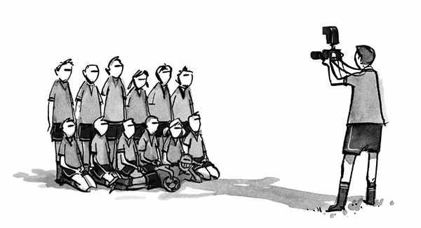

The State of Responsive Web Design
As we move into 2015 it’s the perfect time to address “The State of Responsive Web Design”. We’re going to revisit what we know about RWD, what’s been left by the wayside in recent times, the new tricks we can incorporate into our game today, and what’s coming up on the horizon. The Story So Far Before we get into it, let’s start by defining what we actually mean when we say “Responsive Web Design". When Ethan Marcotte originally coined the term five years ago in his article on A List Apart, he cited fluid grids, flexible images, and media queries as three “technical ingredients” of RWD.  However he immediately qualified these specifications by saying:Since that 2010 article we’ve seen continual evolution in the technology people use to access the internet, as well as the emergence of several new technical ingredients that can be added into our development toolkit. We still use fluid grids, flexible images, and media queries, but those three things alone no longer form a full picture of what Responsive Web Design involves. Technology and web design techniques are in a perpetual state of flux, so the definition of RWD should ideally give us a different way of thinking that will be just as applicable after another five years of change as it is today. In my view, that way of thinking can be summed up as follows.“...but it also requires a different way of thinking.”
By focusing on the way of thinking underlying Responsive Web Design rather than specific technical ingredients, we remain free to strive for the best new ways of creating responsive sites in the continually changing landscape of our industry.“Responsive Web Design is an approach to creating websites that can respond to all known web browsing devices, with content delivery and UI interaction optimized to the greatest degree possible for all visitors.”